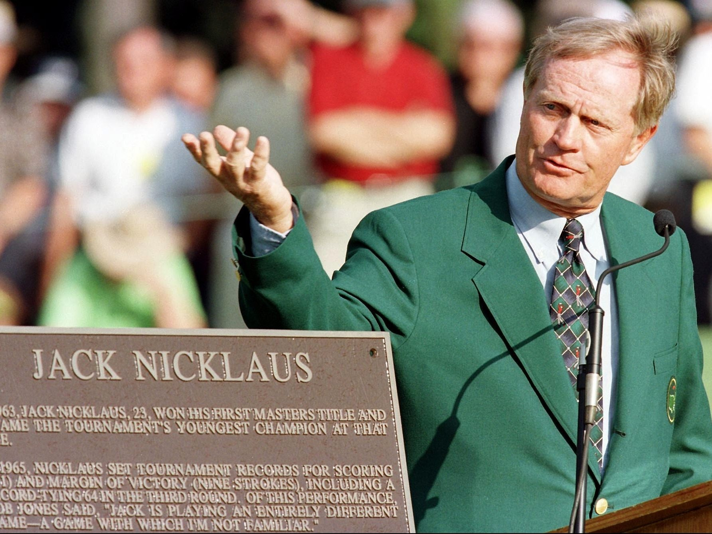
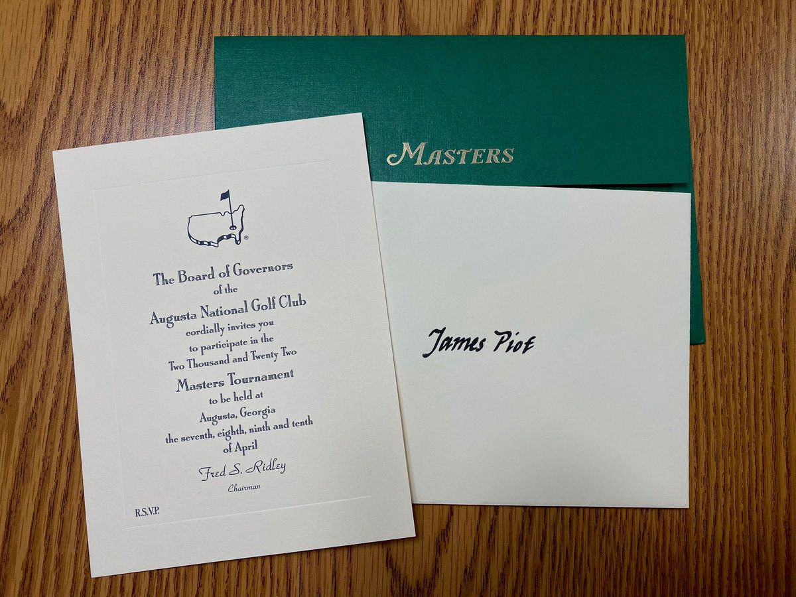
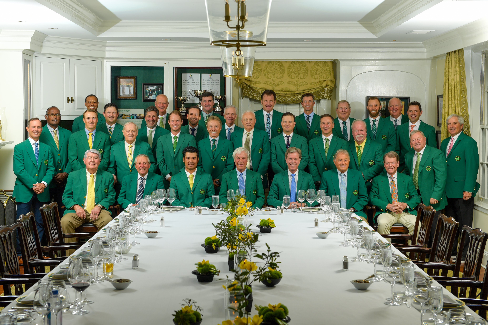
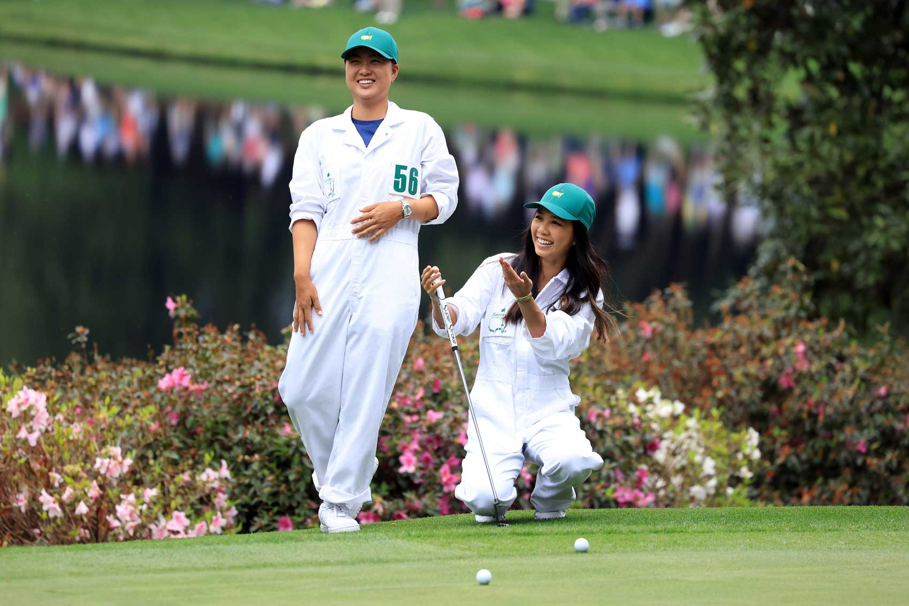

In addition to a cash prize, the winner of the tournament is presented with a distinctive green jacket, formally awarded since 1949 and informally awarded to the champions from the years prior. The green sport coat is the official attire worn by members of Augusta National while on the club grounds; each Masters winner becomes an honorary member of the club. The recipient of the green jacket has it presented to him inside the Butler Cabin soon after the end of the tournament in a televised ceremony, and the presentation is then repeated outside near the 18th green in front of the patrons. Winners keep their jacket for the year after their victory, then return it to the club to wear whenever they are present on the club grounds. Sam Snead was the first Masters champion to be awarded the green jacket after he took his first Masters title in 1949.

The green jacket is only allowed to be removed from the Augusta National grounds by the reigning champion, after which it must remain at the club. Exceptions to this rule include Gary Player, who in his joy of winning mistakenly took his jacket home to South Africa after his 1961 victory (although he has always followed the spirit of the rule and has never worn the jacket); Seve Ballesteros who, in an interview with Peter Alliss from his home in Pedreña, showed one of his two green jackets in his trophy room; and Henry Picard, whose jacket was removed from the club before the tradition was well established, remained in his closet for a number of years, and is now on display at Canterbury Golf Club in Beachwood, Ohio, where he was the club professional for many years.
By tradition, the winner of the previous year's Masters Tournament puts the jacket on the current winner at the end of the tournament. In 1966, Jack Nicklaus became the first player to win in consecutive years and he donned the jacket himself. When Nick Faldo (in 1990) and Tiger Woods (in 2002) repeated as champions, the chairman of Augusta National put the jacket on them.
Winners also have their names engraved on the actual silver Masters trophy. The runner-up receives a silver medal, introduced in 1951. Beginning in 1978, a silver salver was added as an award for the runner-up. The original trophy weighs over 130 pounds and sits on a four-foot-wide base. It resides permanently at Augusta National and depicts the clubhouse of the classic course. The replica, which is significantly smaller, stands just 6.5 inches tall and weighs 20 pounds. The champion and the runner-up both have their names engraved on the permanent trophy, solidifying themselves in golf history. In 1952, the Masters began presenting an award, known as the Silver Cup, to the lowest scoring amateur to make the cut. In 1954, they began presenting an amateur silver medal to the low amateur runner-up. The Double Eagle trophy was introduced in 1967 when Bruce Devlin holed out for double eagle on number 8. He was only the second to do so, and the first in 32 years, following Gene Sarazen on hole 15 in 1932. The trophy is a large crystal bowl with "Masters Tournament" engraved around the top.
As with the other majors, winning the Masters gives a golfer several privileges which make his career more secure. Masters champions are automatically invited to play in the other three majors (the U.S. Open, The Open Championship, and the PGA Championship) for the next five years (except for amateur winners, unless they turn pro within the five-year period), and earn a lifetime invitation to the Masters. They also receive membership on the PGA Tour for the following five seasons and invitations to The Players Championship for five years.
Because the tournament was established by an amateur champion, Bobby Jones, the Masters has a tradition of honoring amateur golf. It invites winners of the most prestigious amateur tournaments in the world. Also, the current U.S. Amateur champion always plays in the same group as the defending Masters champion for the first two days of the tournament. Amateurs in the field are welcome to stay in the "Crow's Nest" atop the Augusta National clubhouse during the tournament. The Crow's Nest is 1,200 square feet (110 m2) with lodging space for five during the competition.
The Champions' Dinner is held each year on the Tuesday evening preceding Thursday's first round. The dinner was first held in 1952, hosted by defending champion Ben Hogan, to honor the past champions of the tournament. At that time 15 tournaments had been played, and the number of past champions was 11. Officially known as the "Masters Club", it includes only past winners of the Masters, although selected members of the Augusta National Golf Club have been included as honorary members, usually the chairman. The defending champion, as host, selects the menu for the dinner. Frequently, Masters champions have served cuisine from their home regions prepared by the Masters chef.
Notable examples have included haggis, served by Scotsman Sandy Lyle in 1989, and bobotie, a South African dish, served at the behest of 2008 champion Trevor Immelman. Other examples include German Bernhard Langer's 1986 Wiener schnitzel, Britain's Nick Faldo's fish and chips, Canadian Mike Weir's elk and wild boar, and Vijay Singh's seafood tom kah and chicken panang curry. The 2011 dinner of Phil Mickelson was a Spanish-themed menu in hopes that Seve Ballesteros would attend, but he was too sick to attend and died weeks later. In 1998, Tiger Woods served cheeseburgers, chicken sandwiches, french fries and milkshakes. Woods was the youngest winner, and when asked about his food choices, he responded with "They said you could pick anything you want... Hey, it's part of being young, that's what I eat." Fuzzy Zoeller, the 1979 champion, created a media storm when he suggested that Woods refrain from serving collard greens and fried chicken, dishes commonly associated with African-American culture.
Until 1983, all players in the Masters were required to use the services of an Augusta National Club caddie, who by club tradition was always an African-American man. Club co-founder Clifford Roberts is reputed to have said, "As long as I'm alive, golfers will be white, and caddies will be black." Since 1983—six years after Roberts's death in 1977—players have been allowed the option of bringing their own caddie to the tournament. The Masters requires caddies to wear a uniform consisting of a white jumpsuit, a green Masters cap, and white tennis shoes. The surname, and sometimes first initial, of each player is found on the back of his caddie's uniform. The defending champion always receives caddie number "1": other golfers get their caddie numbers from the order in which they register for the tournament. The other majors and some PGA Tour events formerly had a similar policy concerning caddies well into the 1970s; the U.S. Open first allowed players to use their own caddies in 1976.
